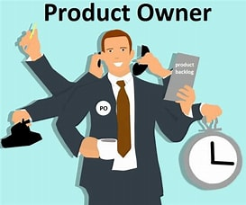

El Scrum Master es la persona que lidera al equipo con el objetivo de que entiendan y apliquen correctamente la metodología Scrum. Su función principal es facilitar el proceso, eliminar los impedimentos y asegurar que se siguen las reglas y los principios de Scrum. Además, el Scrum Master actúa como mentor, coach y facilitador de las reuniones y eventos de Scrum. El Scrum Master no es un jefe ni un gestor, sino un líder servidor que ayuda al equipo a ser más eficiente, efectivo y autónomo.
El Product Owner es el responsable de definir y priorizar el producto, siendo la persona encargada de gestionar el Product Backlog. Su función principal es maximizar el valor del producto y satisfacer las necesidades y expectativas de los clientes y los stakeholders. Además, el Product Owner actúa como intermediario entre el equipo y los usuarios, transmitiendo la visión y el objetivo del producto. El Product Owner no es un simple gestor de requisitos, sino un líder estratégico que toma las decisiones sobre el producto.
El Equipo Scrum es el conjunto de personas que se encargan de diseñar, desarrollar y entregar el producto, siguiendo la metodología Scrum. Su función principal es crear incrementos de valor en cada Sprint, siguiendo el Sprint Goal y el Product Backlog. Además, el Equipo Scrum actúa como una unidad autoorganizada, multifuncional y colaborativa, que se compromete con el trabajo y se adapta al cambio. El Equipo Scrum no es un grupo de individuos aislados, sino un equipo integrado que comparte la responsabilidad y el aprendizaje.
.jpg)